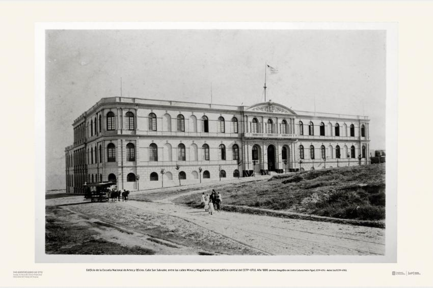
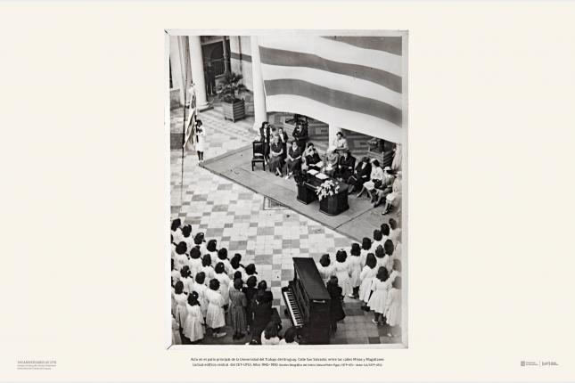

Texto
1878 - Escuela Nacional de Artes y Oficios
En el año 1878 nace la Escuela Nacional de Artes y Oficios. Sus objetivos principales son:
- Formar jóvenes en distintos oficios.
- Capacitación laboral.
- Contribuir al desarrollo industrial.
- Brindar oportunidades educativas a sectores populares.

Foto del primer edificio de la Escuela de Artes y Oficios. (Archivo fotográfico del Centro Cultural Pedro Figari, CETP-UTU).
1942 - Creación oficial de la UTU
En el año 1942 se crea oficialmente la UTU mediante la Ley N.º 10.225. Inspirador: Pedro Figari.
Finalidades:
- Expandir la enseñanza técnica.
- Formar recursos especializados (técnica, artística y tecnológica).
- Vincular educación y trabajo según las necesidades.
- Impulsar el desarrollo económico regional e industrial.
